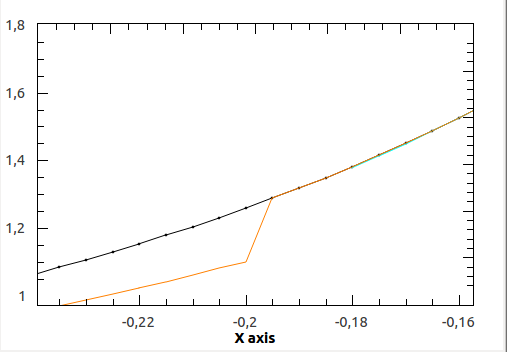

While trying to perform a Lorentzians model selection to some synthetic data, some unexpected things happened. At the end, I tried to adjust three Lorentzians to a curve created adding exactly three Lorentzians with no error or convolution. The returned fitting was relatively bad, even though it was already initialized with the optimum. Finally I detected that the Fitting Algorithm did not return the curve that was supposed to return, in fact, the third Lorentzian was cut to zero value at a certain distance from the zero.
Our example was made with the following parameters (Amplitude, PeakCentre, FWHM):
1, 0, 2
1, 0, 0.4
1, 0, 0.04
An screenshot of the point where it fails is attached.
